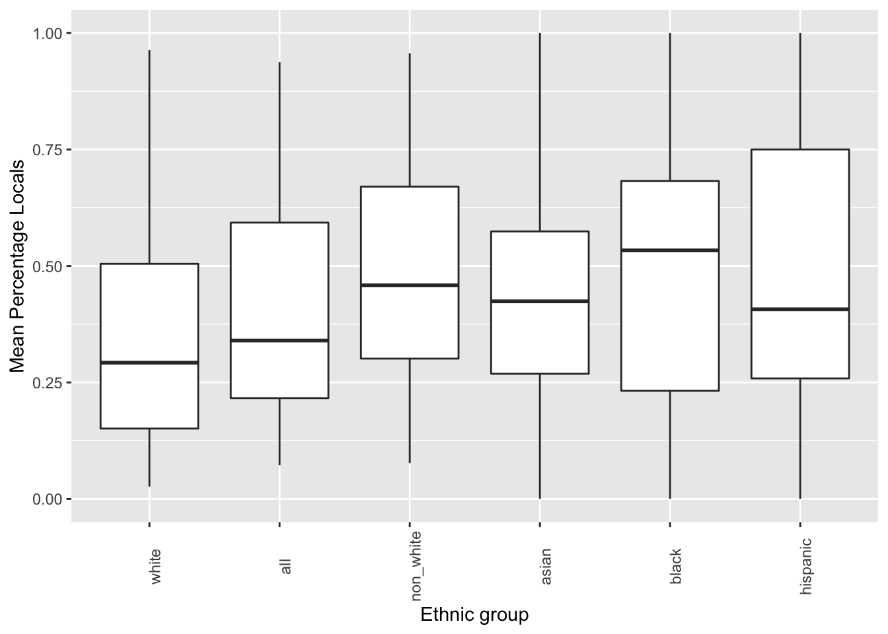
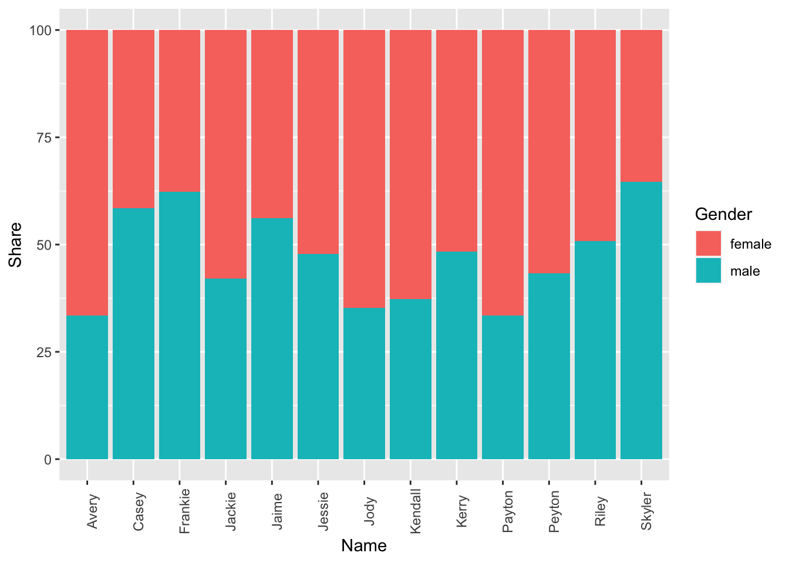
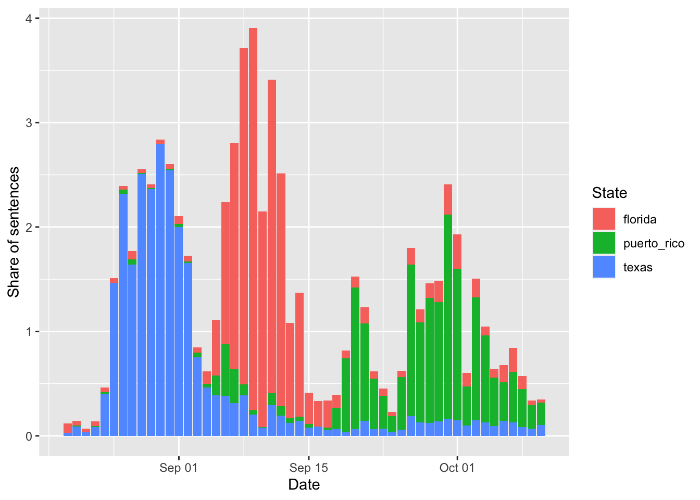
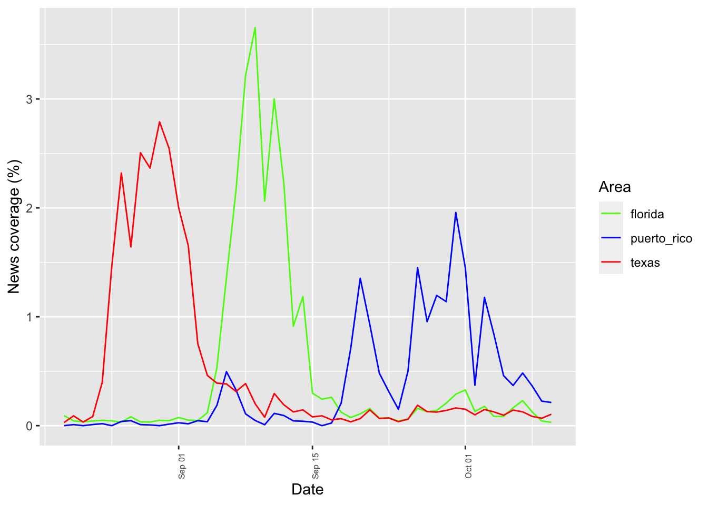

Task A
Inspect the police_locals dataset. Here is the article attached to it: https://fivethirtyeight.com/features/most-police-dont-live-in-the-cities-they-serve/.
Create a new dataset, called police_locals_new, made of the following columns: city, force_size, ethnic_group, perc_locals. You should create the ethnic_group column using a pivot function, as shown in this wpa or in wpa_4. The values in this column should be all, white, non_white, black, hispanic, asian. The perc_locals column should contain the percentage of officers that live in the town where they work, corresponding to their ethnic group. Rearrange based on the ethnic_group and inspect it by printing the first 10 lines.
Make a boxplot, with ethnic_group on the x-axis and perc_locals on the y-axis. ethnic_group should be ordered from the lowest perc_locals to the highest. Put appropriate labels.
Task B
Inspect the unisex_names dataset. Here is the article attached to it: https://fivethirtyeight.com/features/there-are-922-unisex-names-in-america-is-yours-one-of-them/.
Create a new dataset, called unisex_names_new, made of the following columns: name, total, gap, gender, share. The gender column should only contain the values “male” and “female”. The share column should contain the percentages.
Multiply the share column by 100. Re-arrange so that the first rows contain the names with the highest total. Print the first 10 rows of the newly created dataset. Create now a new dataset, called unisex_names_common, with the names in unisex_names_new that have a total higher than 50000.
Using unisex_names_common, make a barplot that has share on the y-axis, name on the x-axis, and with each bar split vertically by color based on the gender.
Task C
Inspect the tv_states dataset. Here is the article attached to it: https://fivethirtyeight.com/features/the-media-really-started-paying-attention-to-puerto-rico-when-trump-did/.
Create a new dataset, with a different name, that is the long version of tv_states. You should decide how to call the new columns, as well as which columns should be used for the transformation.
With the newly created dataset, make a plot of your choosing to illustrate the information contained in this dataset. As an inspiration, you can have a look at what plot was done in the article above.
library(tidyverse)
library(fivethirtyeight)## Some larger datasets need to be installed separately, like senators and
## house_district_forecast. To install these, we recommend you install the
## fivethirtyeightdata package by running:
## install.packages('fivethirtyeightdata', repos =
## 'https://fivethirtyeightdata.github.io/drat/', type = 'source')police_locals_new = police_locals %>%
pivot_longer(cols = all:asian,
names_to = "ethnic_group",
values_to = "perc_locals")
#names_repair = "minimal")
dim(police_locals)## [1] 75 8head(police_locals, 10)## # A tibble: 10 x 8
## city force_size all white non_white black hispanic asian
## <chr> <int> <dbl> <dbl> <dbl> <dbl> <dbl> <dbl>
## 1 New York 32300 0.618 0.446 0.764 0.771 0.763 0.749
## 2 Chicago 12120 0.875 0.872 0.877 0.897 0.840 0.967
## 3 Los Angeles 10100 0.228 0.153 0.264 0.387 0.218 0.305
## 4 Washington 9340 0.116 0.0568 0.157 0.170 0.0899 0.231
## 5 Houston 7700 0.292 0.174 0.399 0.366 0.457 0.408
## 6 Philadelphia 6045 0.835 0.777 0.899 0.925 0.817 NA
## 7 Phoenix 4475 0.312 0.271 0.427 0.522 0.428 NA
## 8 San Diego 4460 0.362 0.373 0.348 0.538 0.298 0.516
## 9 Dallas 3605 0.191 0.172 0.213 0.215 0.257 NA
## 10 Detroit 3265 0.371 0.0820 0.543 0.568 0.333 NAdim(police_locals_new)## [1] 450 4head(police_locals_new, 30)## # A tibble: 30 x 4
## city force_size ethnic_group perc_locals
## <chr> <int> <chr> <dbl>
## 1 New York 32300 all 0.618
## 2 New York 32300 white 0.446
## 3 New York 32300 non_white 0.764
## 4 New York 32300 black 0.771
## 5 New York 32300 hispanic 0.763
## 6 New York 32300 asian 0.749
## 7 Chicago 12120 all 0.875
## 8 Chicago 12120 white 0.872
## 9 Chicago 12120 non_white 0.877
## 10 Chicago 12120 black 0.897
## # … with 20 more rowsggplot(data = police_locals_new, mapping = aes(x = reorder(ethnic_group, perc_locals), y = perc_locals)) +
geom_boxplot() +
labs(x = 'Ethnic group', y = 'Mean Percentage Locals') +
theme(axis.text.x = element_text(angle = 90))## Warning: Removed 111 rows containing non-finite values (stat_boxplot).
unisex_names_new = unisex_names %>%
pivot_longer(cols = male_share:female_share,
names_to = "gender",
values_to = "share",
names_repair = "minimal") %>%
separate(col = gender,
into = c('gender', 'to_delete'),
sep = '_',
remove = TRUE) %>%
select(-to_delete) %>%
mutate(share = share*100) %>%
arrange(desc(total))
dim(unisex_names)## [1] 919 5head(unisex_names, 10)## # A tibble: 10 x 5
## name total male_share female_share gap
## <chr> <dbl> <dbl> <dbl> <dbl>
## 1 Casey 176544. 0.584 0.416 0.169
## 2 Riley 154861. 0.508 0.492 0.0153
## 3 Jessie 136382. 0.478 0.522 0.0443
## 4 Jackie 132929. 0.421 0.579 0.158
## 5 Avery 121797. 0.335 0.665 0.330
## 6 Jaime 109870. 0.562 0.438 0.124
## 7 Peyton 94896. 0.434 0.566 0.133
## 8 Kerry 88964. 0.484 0.516 0.0321
## 9 Jody 80401. 0.352 0.648 0.296
## 10 Kendall 79211. 0.372 0.628 0.255dim(unisex_names_new)## [1] 1838 5head(unisex_names_new, 10)## # A tibble: 10 x 5
## name total gap gender share
## <chr> <dbl> <dbl> <chr> <dbl>
## 1 Casey 176544. 0.169 male 58.4
## 2 Casey 176544. 0.169 female 41.6
## 3 Riley 154861. 0.0153 male 50.8
## 4 Riley 154861. 0.0153 female 49.2
## 5 Jessie 136382. 0.0443 male 47.8
## 6 Jessie 136382. 0.0443 female 52.2
## 7 Jackie 132929. 0.158 male 42.1
## 8 Jackie 132929. 0.158 female 57.9
## 9 Avery 121797. 0.330 male 33.5
## 10 Avery 121797. 0.330 female 66.5unisex_names_common = unisex_names_new %>%
filter(total > 50000)ggplot(data = unisex_names_common, mapping = aes(x = name, y = share, fill = gender)) +
geom_col() +
labs(x = 'Name', y = 'Share', fill='Gender') +
theme(axis.text.x = element_text(angle = 90))
tv_states_new = pivot_longer(tv_states,
cols = florida:puerto_rico,
names_to = 'state',
values_to = 'share_of_sentences')
dim(tv_states)## [1] 52 4head(tv_states, 10)## # A tibble: 10 x 4
## date florida texas puerto_rico
## <date> <dbl> <dbl> <dbl>
## 1 2017-08-20 0.0923 0.0286 0
## 2 2017-08-21 0.0441 0.0904 0.0099
## 3 2017-08-22 0.0359 0.0334 0
## 4 2017-08-23 0.0431 0.0839 0.0103
## 5 2017-08-24 0.0492 0.398 0.0184
## 6 2017-08-25 0.0442 1.46 0
## 7 2017-08-26 0.033 2.32 0.0391
## 8 2017-08-27 0.0825 1.64 0.0459
## 9 2017-08-28 0.0346 2.51 0.0096
## 10 2017-08-29 0.0338 2.37 0.0069dim(tv_states_new)## [1] 156 3head(tv_states_new, 10)## # A tibble: 10 x 3
## date state share_of_sentences
## <date> <chr> <dbl>
## 1 2017-08-20 florida 0.0923
## 2 2017-08-20 texas 0.0286
## 3 2017-08-20 puerto_rico 0
## 4 2017-08-21 florida 0.0441
## 5 2017-08-21 texas 0.0904
## 6 2017-08-21 puerto_rico 0.0099
## 7 2017-08-22 florida 0.0359
## 8 2017-08-22 texas 0.0334
## 9 2017-08-22 puerto_rico 0
## 10 2017-08-23 florida 0.0431ggplot(data = tv_states_new, mapping = aes(x = date, y= share_of_sentences, fill = state)) +
geom_col() +
labs(x = 'Date', fill = 'State', y= 'Share of sentences')
ggplot(tv_states_new, aes(x=date, y=share_of_sentences, group=state, color=state)) +
geom_line() +
labs(x = 'Date', y = 'News coverage (%)', color='Area') +
scale_color_manual(values=c("#54F708", "blue", "red")) +
theme(axis.text.x = element_text(angle = 90, size = 6))